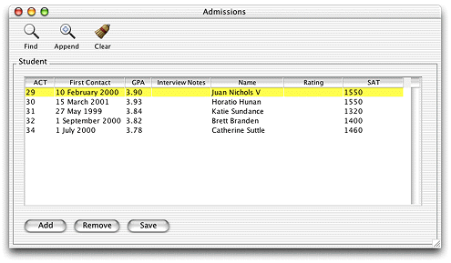

| PATH |

WebObjects recognizes the need for distributed, three-tier application solutions with more complex, rich, and responsive user interfaces than HTML allows. So, in addition to HTML-based WebObjects applications, you can also write Java-based WebObjects desktop applications which use Swing for the user interface. These applications can be deployed either as applets running in a web browser or as real desktop applications running in the client's Java Virtual Machine (though deploying as desktop applications is highly recommended). This feature of WebObjects is called Java Client.
In the sample Java Client application shown in Figure 6-1, the user interface is like the interfaces you see in traditional desktop applications.
Figure 6-1 A sample Java Client application
WebObjects Java Client is a three-tier network application solution that allows you to develop platform-agnostic desktop applications with database access and rich user interfaces. Java Client applications are WebObjects applications: they share much of their API with traditional HTML-based WebObjects applications, such as Enterprise Objects for database access and the Foundation APIs that supply data structures and other core functionality to applications.